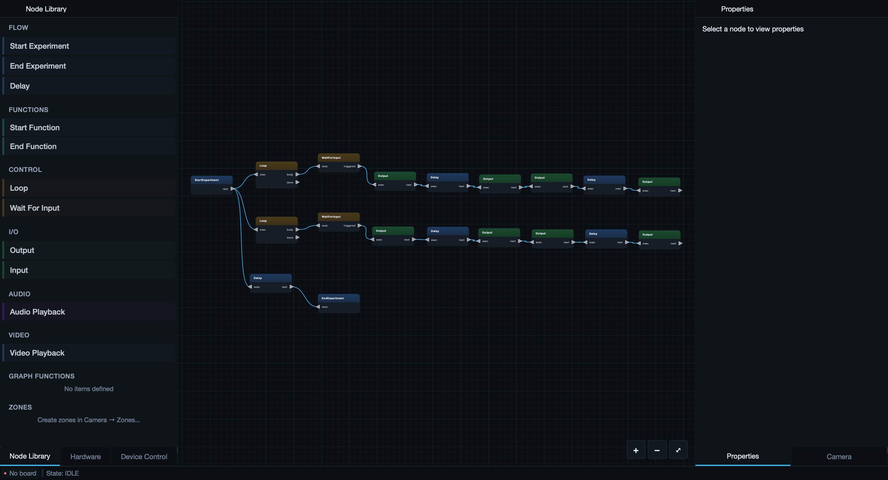

GLIDER¶
General Laboratory Interface for Design, Experimentation, and Recording
GLIDER is a desktop application for building, running, and recording laboratory experiments — without writing code. You wire together a visual node graph that controls hardware (Arduino, Raspberry Pi, Bluetooth devices), reads sensors, records synchronized video and data, and drives an experiment from start to finish. The same experiment can run on a full desktop or on a touchscreen Runner — a self-contained kiosk you can leave at the bench or bolt to a behavior rig.

-
New here?
Install GLIDER and build your first experiment in a few minutes.
-
Build experiments
Learn the node graph, wire up devices, and package routines as functions.
-
Record & analyze
Set up cameras, record synchronized video + data, track, and analyze behavior.
-
Run at the bench
Operate an experiment from a touchscreen or a Raspberry Pi kiosk.
What GLIDER does¶
- Visual experiment design. Drag nodes onto a canvas and connect them. An experiment is a graph that flows from a Start node to an End node, triggering hardware writes, sensor reads, timers, loops, and logic along the way.
- Real hardware, no firmware. Talk to an Arduino over USB, a Raspberry Pi's GPIO pins, or a Bluetooth Low Energy peripheral — using the same node graph. Digital outputs, PWM, servos, analog inputs, motor governors, I²C sensors, and more are all supported.
- Synchronized recording. Record camera video (MP4) alongside a frame-aligned CSV of every device's state, plus an event log — so your data lines up with the footage frame for frame.
- Tracking & behavior analysis. With optional extras, GLIDER runs pose tracking on your video and helps you cluster and classify behavior.
- Touchscreen Runner. Flip into a large-button kiosk mode for running experiments at the bench, with manual device controls and one-tap function buttons.
Two ways to use it¶
| Desktop mode | Runner mode | |
|---|---|---|
| Best for | Designing experiments | Running them at the bench |
| Interface | Full node-graph editor, docks, menus | Four big touch tabs: Setup, Run, Manual, Camera |
| Typical device | Laptop / workstation | Touchscreen or Raspberry Pi kiosk |
You design an experiment once in desktop mode, save it as a .glider file, and
open the same file in Runner mode to run it.
First time?
Head to Installation, then walk through Your First Experiment. If you'd rather understand the moving parts first, read How GLIDER Works.
Open source¶
GLIDER is developed by LaingLab and released under the MIT License. Issues and contributions are welcome on GitHub.